Лабораторная работа №3
Разработка требований к программной системе
GremlinDrive — облачное файловое хранилище с веб- и мобильным приложением. Работа продолжает исследование ЛР1 и проектирование интерфейса ЛР2: сформулированы требования, построены UML-модели, EventStorming, Event Modeling, C4-модель и техническое задание.
1. Паспорт работы
Цель — разработать функциональные и нефункциональные требования, представить их в виде пользовательских историй, сценариев и UML-моделей, а также спроектировать архитектуру средствами PlantUML, Mermaid, EventStorming, Event Modeling и C4.
Роли
| Роль | Возможности |
|---|---|
| Гость | Открывает ссылку, вводит пароль, скачивает файл |
| Пользователь | Файлы, папки, поиск, ссылки, версии, запросы прав |
| Владелец папки | Участники, роли, доступ к общей папке |
| Администратор | Пользователи, квоты, аудит, отчёты |
Платформы
- Веб: React SPA, 360–1440 px, клавиатура, drag-and-drop.
- Мобильное: React Native, Android 9+/iOS 14+, камера, офлайн, push.
- Гостевая страница: адаптивная, без регистрации.
2. Пользовательские истории
Пять ключевых сценариев охватывают гостя, пользователя, владельца общей папки и администратора на веб- и мобильной платформах.
| ID | История | Приоритет | Зависимости |
|---|---|---|---|
| US-01 | Регистрация по e-mail с подтверждением | High | — |
| US-02 | Вход в мобильное приложение с биометрией | High | US-01 |
| US-03 | Публичная ссылка с паролем и сроком | High | US-01, US-07 |
| US-04 | Открытие ссылки и скачивание гостем | High | US-03 |
| US-05 | Приглашение участников с ролями | High | US-01 |
| US-06 | История версий и восстановление | Medium | US-05, US-07 |
| US-07 | Загрузка файлов и фото с мобильного | High | US-01, US-02 |
| US-08 | Офлайн-доступ к избранным файлам | Medium | US-07 |
| US-09 | Управление пользователями и квотами | High | US-01 |
| US-10 | Обработка запросов на расширение прав | Medium | US-09 |
Критерии приёмки US-03: ссылка с паролем и сроком
- Уровень доступа, пароль от 8 символов, срок 1/7/14/30 дней или бессрочно.
- Ссылка создаётся только при наличии прав владельца или редактирования.
- URL и пароль копируются отдельными кнопками.
- Неверный пароль — ошибка; после 5 попыток блокировка на 15 минут.
- Истёкшая ссылка не раскрывает имя и содержимое файла.
- Создание, отзыв и скачивания фиксируются в аудите.
Критерии приёмки US-07: мобильная загрузка
- Кнопка «+»: камера, галерея, файлы; системные разрешения.
- Фоновая загрузка с возобновлением после обрыва.
- В офлайне статус «ожидает сети», после сети — автозапуск.
- Файлы больше 100 МБ передаются частями; квота проверяется заранее.
- Push по завершении открывает карточку файла.
- Тёмная тема и увеличение шрифта.
3. UML-модели
Базовые модели выполнены на PlantUML, три обязательные диаграммы продублированы на Mermaid для публикации в GitHub wiki.
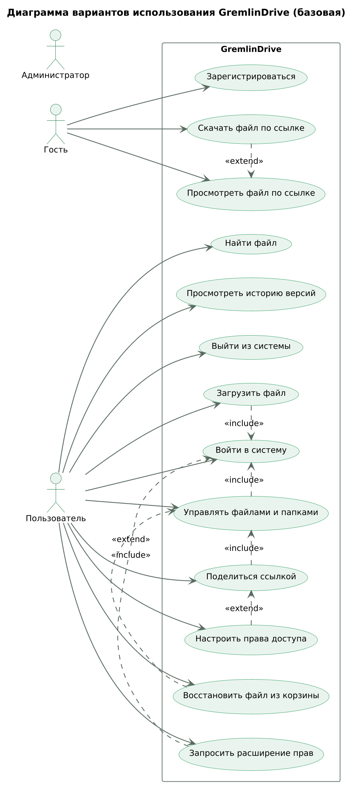
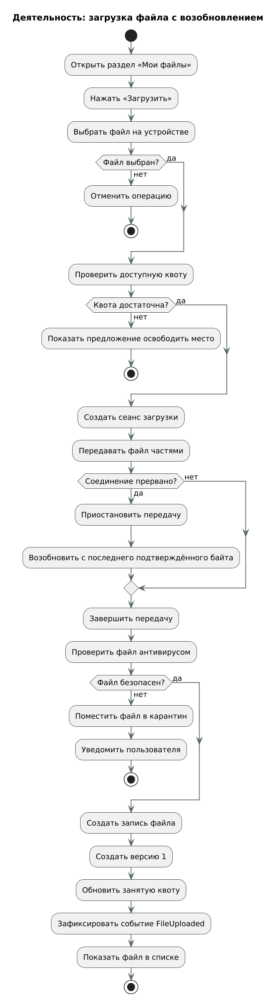
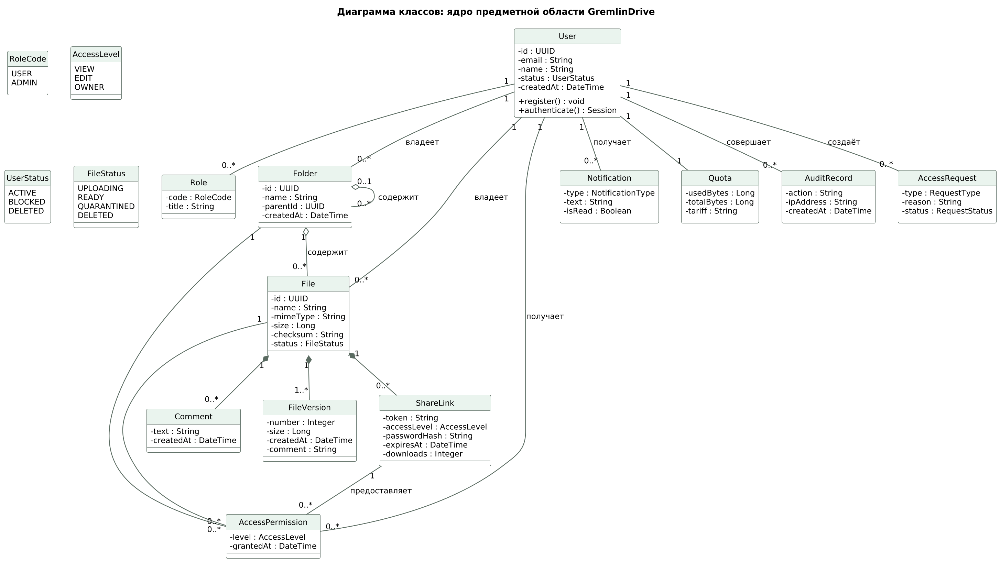
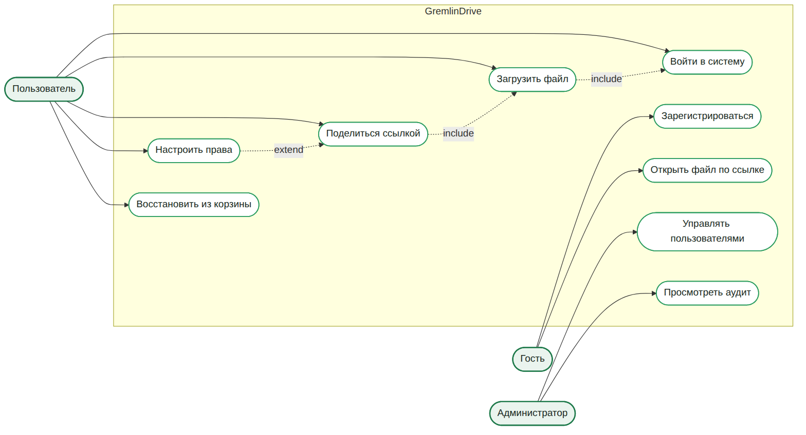
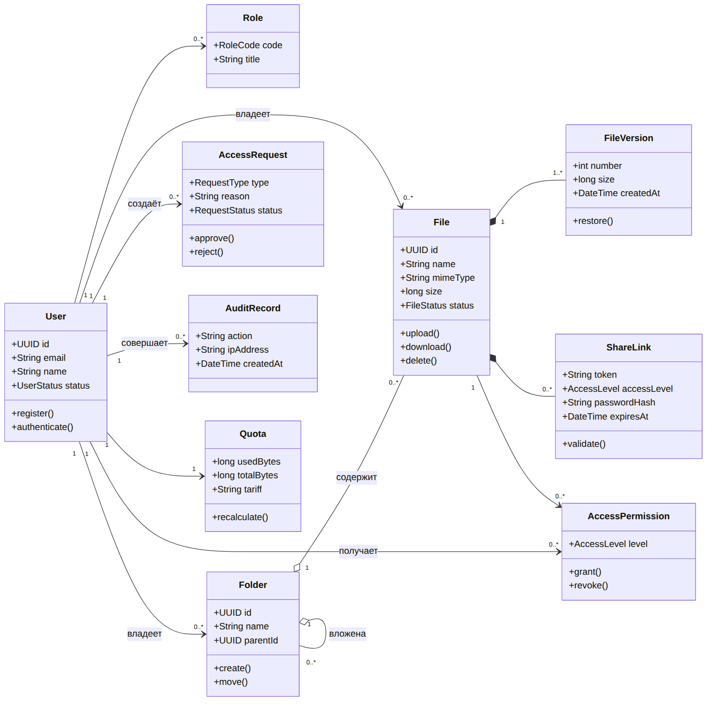
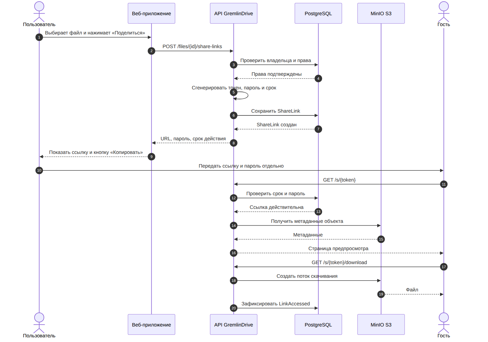
4. EventStorming
Три уровня: Big Picture, Process Modeling и Software Design. Цвета соответствуют нотации plantuml-libs: события — оранжевые, команды — голубые, политики — фиолетовые, read-модели — зелёные, hotspots — красные.
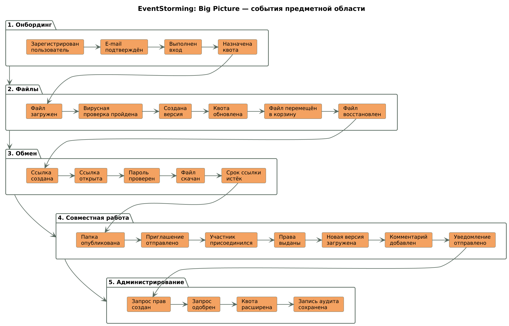
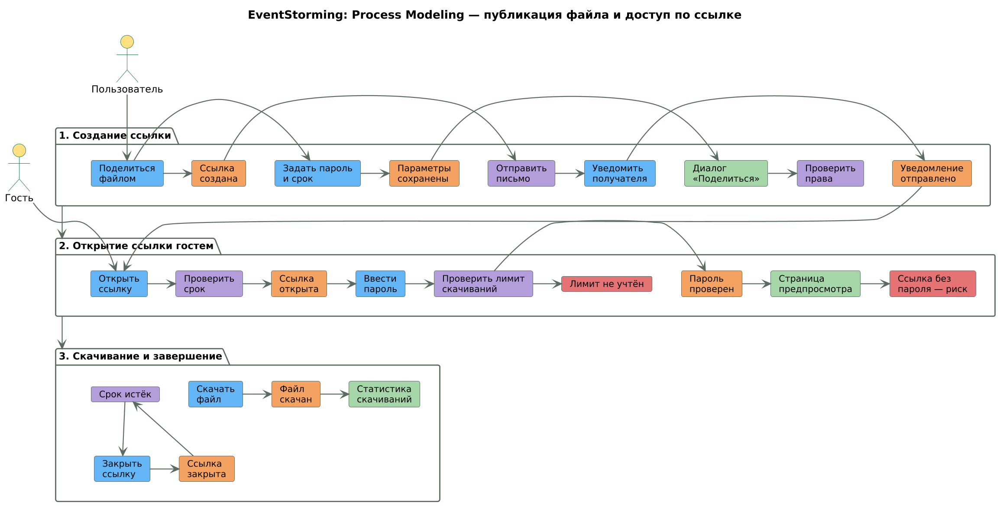
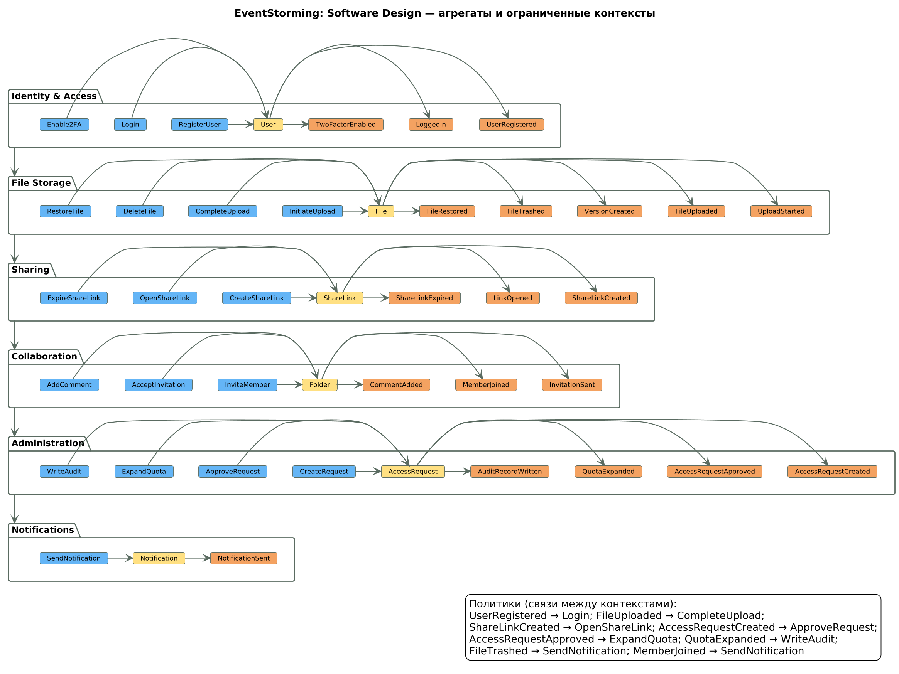
| Контекст | Агрегат | Ключевые события |
|---|---|---|
| Identity & Access | User | UserRegistered, LoggedIn, TwoFactorEnabled |
| File Storage | File | FileUploaded, VersionCreated, FileTrashed, FileRestored |
| Sharing | ShareLink | ShareLinkCreated, LinkOpened, ShareLinkExpired |
| Collaboration | Folder | InvitationSent, MemberJoined, CommentAdded |
| Administration | AccessRequest | AccessRequestCreated, AccessRequestApproved, QuotaExpanded |
| Notifications | Notification | NotificationSent |
5. Event Modeling
Срезы описывают путь Trigger → Command → Event → View → Automation. Триггеры — экраны и макеты ЛР2.
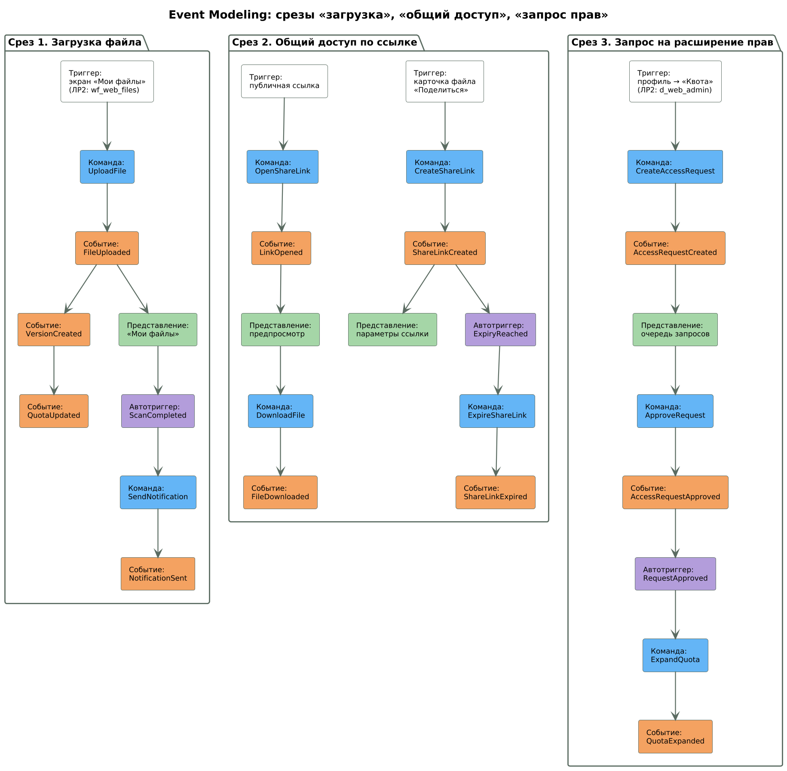
Загрузка
UploadFile → FileUploaded, VersionCreated, QuotaUpdated → View «Мои файлы».
Ссылка
CreateShareLink → ShareLinkCreated → View параметров; гость: LinkOpened, FileDownloaded.
Запрос прав
CreateAccessRequest → AccessRequestCreated → View очереди → ApproveRequest → QuotaExpanded.
6. C4-модель
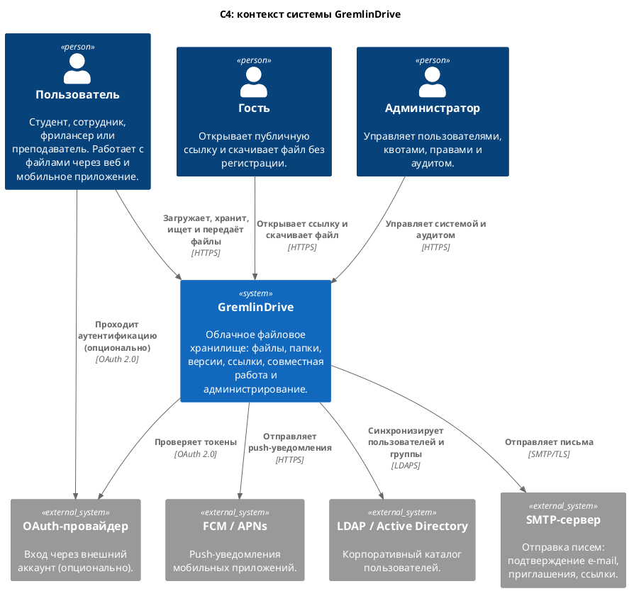
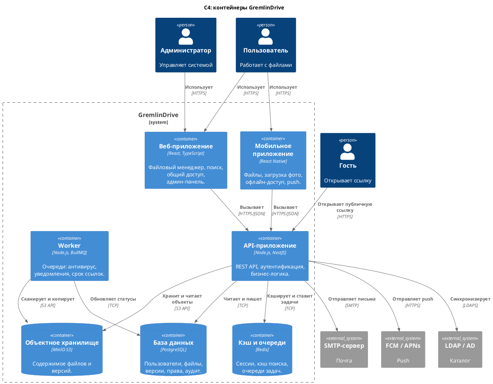
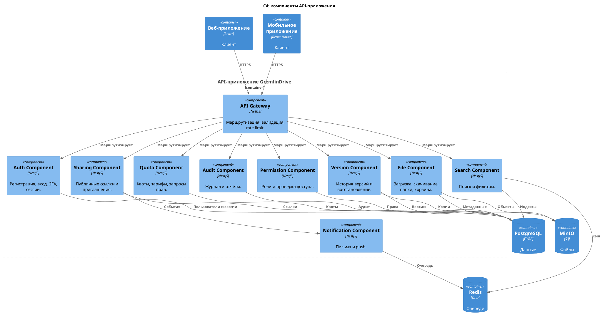
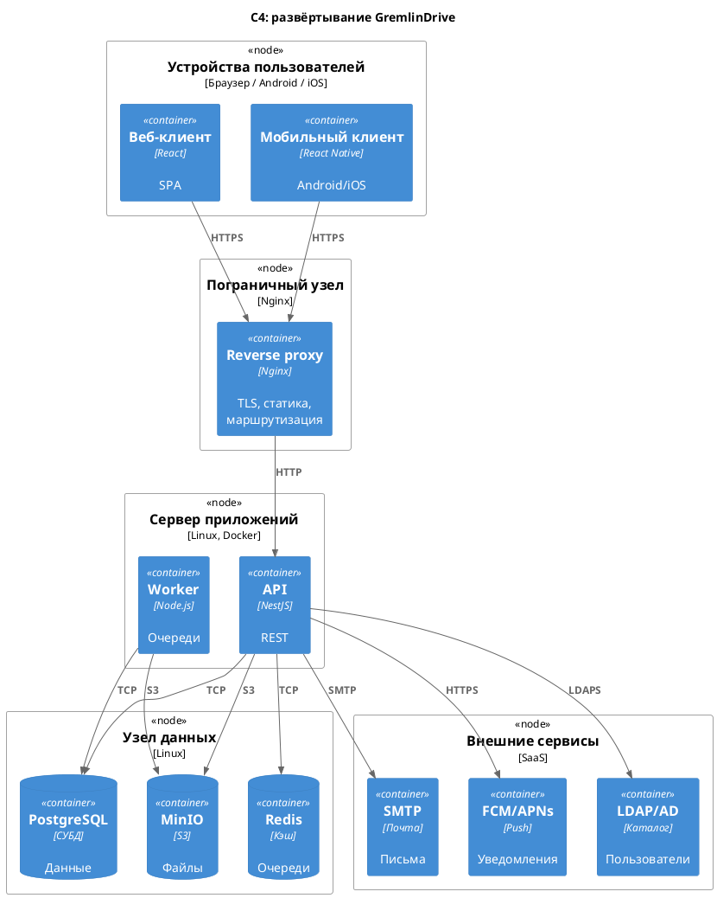
7. Техническое задание
SRS структурировано по ISO/IEC/IEEE 29148: введение, общее описание, функциональные и нефункциональные требования, внешние интерфейсы, база данных, верификация и открытые вопросы.
| Группа | Требования |
|---|---|
| Аккаунт и доступ | FR-01–FR-04, FR-30 |
| Файлы и версии | FR-05–FR-11 |
| Ссылки и гости | FR-12–FR-14 |
| Совместная работа | FR-15–FR-19 |
| Администрирование | FR-20–FR-24 |
| Уведомления, офлайн, качество | FR-25–FR-29 |
| Атрибут | Требование |
|---|---|
| Безопасность | TLS 1.2+, хеширование паролей, 2FA, аудит, OWASP Top 10 |
| Надёжность | Доступность 99,5 %, RPO ≤ 24 ч, RTO ≤ 4 ч |
| Удобство | Ключевой сценарий ≤ 1 мин, SUS ≥ 70 |
| Доступность | WCAG 2.1 AA, клавиатура, скринридеры |
| Совместимость | Chrome, Firefox, Edge, Safari; Android 9+, iOS 14+ |
8. Артефакты
Отчёт и документация
- lab3-report.pdf — полный отчёт (82 стр.).
- docs/labs/lab3 — Markdown-страницы.
- Исходники диаграмм.